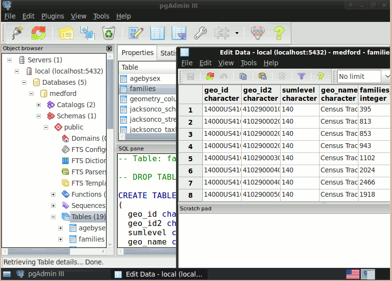

PostGIS¶
Base de données spatiale¶
PostGIS rend spatiale la base de données relationnelle populaire PostgreSQL, lui permettant d’être utilisée comme une base de données de stockage pour les Systèmes d’Information Géographique (SIG) et pour les applications de cartographie en ligne de la même manière qu’Oracle Spatial le fait sur la base de données Oracle.
PostGIS est stable, rapide, conforme aux standards, avec des centaines de fonctions spatiales et est actuellement la base de données spatiale opensource la plus utilisée actuellement. PostGIS est utilisée par diverses organisations autour du monde, incluant des agences gouvernementales gérant des données à caractère sensible et des organisations stockant des térabytes de données servant des millions de requêtes par jour.
L’administration de base de données est disponible pour le bureau et le web avec pgAdmin, phpPgAdmin, et d’autres. L’import/export de données peut être fait par des outils en ligne de commande (shp2pgsql, pgsql2shp, ogr2ogr, dxf2postgis) ou depuis des clients SIG bureautiques et web. Ces clients peuvent aussi cartographier et manipuler les tables des bases de données spatiales PostGIS.
{kind=link}
Caractéristiques principales¶
- Centaines de fonctions spatiales
- Tampons, unions, recouvrements, distance et plus
- Intégrité transactionnel ACID
- Index spatial R-Tree
- Support multiutilisateurs
- Verrouillage à la ligne
- Réplication
- Partitionnement
- Sécurité basée sur les rôles
- Espaces de table, schémas
Standards implémentés¶
- Conforme au standard OGC SFSQL
Détails¶
Site web: http://postgis.refractions.net/
Licence: Licence GNU General Public (GPL) version 2
Version du logiciel: 2.1.3
Plates-formes supportées: Windows, Linux, Mac
Interface de l’API: SQL
Support: http://www.osgeo.org/search_profile